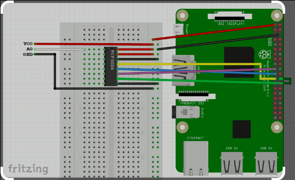

Pressure Transducers and Data Logging with Raspberry Pi#
This section introduces modern pressure transducers and outlines the use of a Raspberry Pi combined with an MCP3008, MCP3208, or MCP3408 Analog-to-Digital Converter (ADC) to monitor pressures automatically in hydraulic systems. The datalogger setup employs a technique called polling, where multiple input channels are sequentially monitored. While the readings are not strictly simultaneous, the time offsets are small enough to treat the data as effectively synchronous for most hydraulic applications. Any necessary adjustments or interpolations to achieve a more refined temporal alignment can be handled during post-capture data processing.
Modern Pressure Transducers#
Pressure transducers are widely used in hydraulic and pneumatic systems to measure fluid pressure. These devices convert physical pressure into an electrical signal, typically voltage or current, which can be processed and analyzed.
Key Components of a Pressure Transducer#
Pressure Sensor: The core sensing element, often based on piezoelectric or capacitive technology, deforms under pressure to generate a measurable electrical response.
Signal Conditioning: Integrated electronics amplify and linearize the raw sensor output to ensure accurate readings over a wide range of pressures.
Output Interface: Most transducers provide analog outputs (e.g., 0–5 V, 4–20 mA) suitable for connection to ADCs like the MCP3008, MCP3208, or MCP3408.
Applications#
Monitoring hydraulic system performance in industrial processes.
Measuring flow rates indirectly via pressure differentials.
Detecting system faults such as leaks or blockages by observing pressure fluctuations.
Advantages#
High accuracy and sensitivity.
Ability to operate in harsh environments, with rugged designs that can handle high pressures and temperatures.
Compatibility with automation and data acquisition systems.
The Datalogger Setup#
The datalogger integrates a Raspberry Pi, an ADC (MCP3008, MCP3208, or MCP3408), and pressure transducers to create a versatile, low-cost solution for pressure monitoring. This system offers significant flexibility, scalability, and ease of use, making it ideal for academic and small-scale industrial applications.
System Overview#
Raspberry Pi: Acts as the central processing unit for data acquisition, storage, and processing.
ADC (e.g., MCP3008): Converts the analog voltage signals from the transducers into digital data for the Raspberry Pi. It supports up to eight input channels.
Pressure Transducers: Provide the analog inputs that represent pressure readings.
Polling Technique#
The Raspberry Pi’s limited ADC capabilities are augmented by the MCP3008 (or similar), which polls each channel sequentially. This approach allows multiple transducers to be monitored without requiring simultaneous sampling.
Each channel is monitored for a fraction of time before moving to the next.
The process repeats cyclically, ensuring consistent data collection across all channels.
While readings are not perfectly synchronous, the temporal delay is negligible for hydraulic systems with slow dynamic behavior.
Practical Setup#
Connect the transducers to the ADC’s input channels.
Configure the Raspberry Pi’s GPIO pins for SPI communication with the ADC.
Use a Python script to poll the channels, log the data, and optionally display real-time results.
Data Processing and Analysis#
While the datalogger provides raw data, effective analysis requires post-capture processing. Here’s an outline of the steps involved:
Time Alignment#
If precise temporal alignment is necessary, interpolate data points to synchronize measurements across channels.
Data Visualization#
Plot pressure trends over time to identify patterns or anomalies.
Use tools like
matplotlibor specialized data analysis software for visualization.
Applications in System Diagnostics#
Detect pressure drops that indicate leaks.
Monitor pressure fluctuations to evaluate system stability.
Optimize system performance by analyzing pressure profiles during operation.
Advantages of Using the Raspberry Pi-Based System#
Low Cost: Combines off-the-shelf components for a budget-friendly solution.
Customization: Python scripting allows for extensive customization of data logging and analysis routines.
Scalability: Easily expandable with additional ADCs or other sensors.
Portability: Compact design allows the system to be deployed in diverse environments.
Summary#
The integration of modern pressure transducers with a Raspberry Pi and an ADC (MCP3008, MCP3208, or MCP3408) provides a powerful and adaptable tool for monitoring hydraulic systems. While the polling approach introduces slight delays in data acquisition, it is an effective solution for applications where real-time accuracy is not critical. With proper post-capture processing, this system offers valuable insights into system performance, enabling diagnostics, optimization, and system design improvements.
MCP3008 Setup#
The MCP3008 is an 8-channel 10-bit Analog-to-Digital Converter (ADC) that communicates with the Raspberry Pi via the Serial Peripheral Interface (SPI) protocol. It is compact, efficient, and widely used for converting analog sensor data into digital format for processing. Below, we outline the setup process and its usage.
Discussion#
The MCP3008 ADC is critical in interfacing analog sensors, such as pressure transducers, with the Raspberry Pi, which lacks native analog input capabilities. Its 8 input channels allow simultaneous monitoring of multiple sensors, while its 10-bit resolution ensures adequate precision for most small-scale applications.
One of the key benefits of the MCP3008 is its versatility in power supply options. It can operate on either 5V or 3.3V, making it compatible with a wide range of systems, including the Raspberry Pi Zero. The decision to power it using the Pi’s 5V pin ensures full operating range and minimizes noise, especially in systems with high-resolution requirements. However, in cases where the Pi struggles with 5V power demands, the MCP3008’s capability to operate on 3.3V serves as a reliable fallback.
[Photo of breadboard with correct wiring]
The photograph above is the system fully configured, ready to be installed into a water protective enclosure.

The diagram above shows a wiring layout.
Note
The wiring diagram is for a Pi3B. The 40-pin header (bus) is the same on the Pi Zero, the side closest to the SD card slot corresponds to the top in the image. The wiring shows layout for only channel 0, our system uses all 8 pins on the left, but this diagram is adequate as documentation.
How we will use it:#
We will power the MCP3008 from the Pi Zero using the 5V pins. The MCP3008 can handle up to 5.5V, so we will be within safe operating limits. If the Pi Zero struggles with 5V, the MCP3008 can also function with the 3.3V supply, as demonstrated in older Raspberry Pi systems.
The SPI communication pins on the Raspberry Pi (MOSI, MISO, CLK, and CS) will be connected to their respective pins on the MCP3008. Each of the analog sensor outputs will be wired to one of the eight input channels on the ADC. The setup ensures that analog sensor data can be efficiently digitized and processed by the Raspberry Pi’s Python scripts for real-time monitoring and logging.
Datalogger Script#
The datalogger script is the core of the system, responsible for polling data from the MCP3008, processing it, and storing or displaying the results in real time. Below, we describe its structure and functionality.
Script Overview#
The script utilizes Python and the RPi.GPIO library to interface with the Raspberry Pi’s GPIO pins and communicate with the MCP3008. The primary tasks of the script include:
Initialization:
Setting up the GPIO pins for SPI communication.
Defining constants for channel configuration and timing.
Polling Data:
Sequentially reading data from each of the eight input channels.
Logging the analog-to-digital conversion results to the console.
3.Data Processing:
Formatting the timestamp and ADC values for easy interpretation.
Preparing the data for potential storage or visualization.
Cleanup:
Ensuring all GPIO resources are released properly to avoid conflicts during subsequent runs.
Key Features#
Polling Mechanism: The script cycles through each channel, ensuring all sensors are periodically monitored.
Configurable Parameters: Sampling interval and number of readings can be easily adjusted to meet application-specific needs.
Real-Time Output: Captured data is displayed in real time, providing immediate feedback for system monitoring.
Example Output
Sun Jan 12 10:15:45 2025 | CH: 0 | ADCVal: 523
Sun Jan 12 10:15:46 2025 | CH: 1 | ADCVal: 467
Sun Jan 12 10:15:47 2025 | CH: 2 | ADCVal: 389
Sun Jan 12 10:15:48 2025 | CH: 3 | ADCVal: 512
This format includes a timestamp, channel number, and ADC value, providing a clear and concise record of the system’s state at each polling interval.
import RPi.GPIO as GPIO
import time
from RPLCD.gpio import CharLCD
# change these as desired - they're the pins connected from the
# SPI port on the ADC to the Cobbler
SPICLK = 23
SPIMISO = 21
SPIMOSI = 19
SPICS = 24
pin_rs=37
pin_e=35
D4=33
D5=31
D6=29
D7=32
# photoresistor connected to adc #0
photo_ch = 0
#port init
def init():
GPIO.setwarnings(False)
GPIO.cleanup() #clean up at the end of your script
GPIO.setmode(GPIO.BOARD) #to specify whilch pin numbering system
# set up the SPI interface pins
GPIO.setup(SPIMOSI, GPIO.OUT)
GPIO.setup(SPIMISO, GPIO.IN)
GPIO.setup(SPICLK, GPIO.OUT)
GPIO.setup(SPICS, GPIO.OUT)
GPIO.setup(pin_rs, GPIO.OUT)
GPIO.setup(pin_e, GPIO.OUT)
GPIO.setup(D4, GPIO.OUT)
GPIO.setup(D5, GPIO.OUT)
GPIO.setup(D6, GPIO.OUT)
GPIO.setup(D7, GPIO.OUT)
#read SPI data from MCP3008(or MCP3204) chip,8 possible adc's (0 thru 7)
def readadc(adcnum, clockpin, mosipin, misopin, cspin):
if ((adcnum > 7) or (adcnum < 0)):
return -1
GPIO.output(cspin, True)
GPIO.output(clockpin, False) # start clock low
GPIO.output(cspin, False) # bring CS low
commandout = adcnum
commandout |= 0x18 # start bit + single-ended bit
commandout <<= 3 # we only need to send 5 bits here
for i in range(5):
if (commandout & 0x80):
GPIO.output(mosipin, True)
else:
GPIO.output(mosipin, False)
commandout <<= 1
GPIO.output(clockpin, True)
GPIO.output(clockpin, False)
adcout = 0
# read in one empty bit, one null bit and 10 ADC bits
for i in range(12):
GPIO.output(clockpin, True)
GPIO.output(clockpin, False)
adcout <<= 1
if (GPIO.input(misopin)):
adcout |= 0x1
GPIO.output(cspin, True)
adcout >>= 1 # first bit is 'null' so drop it
return adcout
def main():
init()
time.sleep(5) # enough time for everything to sync
print" Multi-Channel Data Logger \n "
print" Experiment - Detect on Channel 0 through 7 using sequential polling \n"
print" Data File Syntax is : \n"
print" Weekday Month Day HH:MM:SS Year : ADC Value "
time.sleep(1) #wait until header printed
while True:
# set and read channel0
photo_ch = 0
adc_value=readadc(photo_ch, SPICLK, SPIMOSI, SPIMISO, SPICS)
now = time.strftime("%c") # capture actual time as center of sampling interval
print now + " " + "CH: " + str(photo_ch) + " ADCVal: " + str(adc_value)
time.sleep(1) #change this to change reporting invertals
# set and read channel1
photo_ch = 1
adc_value=readadc(photo_ch, SPICLK, SPIMOSI, SPIMISO, SPICS)
now = time.strftime("%c") # capture actual time as center of sampling interval
print now + " " + "CH: " + str(photo_ch) + " ADCVal: " + str(adc_value)
time.sleep(1) #change this to change reporting invertals
# set and read channel2
photo_ch = 2
adc_value=readadc(photo_ch, SPICLK, SPIMOSI, SPIMISO, SPICS)
now = time.strftime("%c") # capture actual time as center of sampling interval
print now + " " + "CH: " + str(photo_ch) + " ADCVal: " + str(adc_value)
time.sleep(1) #change this to change reporting invertals
# set and read channel3
photo_ch = 3
adc_value=readadc(photo_ch, SPICLK, SPIMOSI, SPIMISO, SPICS)
now = time.strftime("%c") # capture actual time as center of sampling interval
print now + " " + "CH: " + str(photo_ch) + " ADCVal: " + str(adc_value)
time.sleep(1) #change this to change reporting invertals
# set and read channel4
photo_ch = 4
adc_value=readadc(photo_ch, SPICLK, SPIMOSI, SPIMISO, SPICS)
now = time.strftime("%c") # capture actual time as center of sampling interval
print now + " " + "CH: " + str(photo_ch) + " ADCVal: " + str(adc_value)
time.sleep(1) #change this to change reporting invertals
# set and read channel5
photo_ch = 5
adc_value=readadc(photo_ch, SPICLK, SPIMOSI, SPIMISO, SPICS)
now = time.strftime("%c") # capture actual time as center of sampling interval
print now + " " + "CH: " + str(photo_ch) + " ADCVal: " + str(adc_value)
time.sleep(1) #change this to change reporting invertals
# set and read channel6
photo_ch = 6
adc_value=readadc(photo_ch, SPICLK, SPIMOSI, SPIMISO, SPICS)
now = time.strftime("%c") # capture actual time as center of sampling interval
print now + " " + "CH: " + str(photo_ch) + " ADCVal: " + str(adc_value)
time.sleep(1) #change this to change reporting invertals
# set and read channel7
photo_ch = 7
adc_value=readadc(photo_ch, SPICLK, SPIMOSI, SPIMISO, SPICS)
now = time.strftime("%c") # capture actual time as center of sampling interval
print now + " " + "CH: " + str(photo_ch) + " ADCVal: " + str(adc_value)
time.sleep(1) #change this to change reporting invertals
if __name__ == '__main__':
try:
main()
except KeyboardInterrupt:
pass
GPIO.cleanup()
import RPi.GPIO as GPIO
import time
from RPLCD.gpio import CharLCD
# GPIO Pin Definitions
SPICLK = 23
SPIMISO = 21
SPIMOSI = 19
SPICS = 24
pin_rs = 37
pin_e = 35
D4 = 33
D5 = 31
D6 = 29
D7 = 32
# Configurable Parameters
CHANNELS = 8
DEFAULT_SAMPLING_INTERVAL = 1 # seconds
MAX_READS = 600 # Upper bound on total traverses
# Initialize GPIO
def init_gpio():
GPIO.setwarnings(False)
GPIO.cleanup() # Clean up at the end of your script
GPIO.setmode(GPIO.BOARD) # Use board pin numbering
GPIO.setup(SPIMOSI, GPIO.OUT)
GPIO.setup(SPIMISO, GPIO.IN)
GPIO.setup(SPICLK, GPIO.OUT)
GPIO.setup(SPICS, GPIO.OUT)
GPIO.setup(pin_rs, GPIO.OUT)
GPIO.setup(pin_e, GPIO.OUT)
GPIO.setup(D4, GPIO.OUT)
GPIO.setup(D5, GPIO.OUT)
GPIO.setup(D6, GPIO.OUT)
GPIO.setup(D7, GPIO.OUT)
# Read SPI data from MCP3008 chip
def read_adc(channel, clockpin, mosipin, misopin, cspin):
if channel < 0 or channel > 7:
return -1
GPIO.output(cspin, True)
GPIO.output(clockpin, False) # Start clock low
GPIO.output(cspin, False) # Bring CS low
commandout = channel
commandout |= 0x18 # Start bit + single-ended bit
commandout <<= 3 # Only 5 bits are sent
for _ in range(5):
GPIO.output(mosipin, bool(commandout & 0x80))
commandout <<= 1
GPIO.output(clockpin, True)
GPIO.output(clockpin, False)
adcout = 0
# Read in 12 bits (1 null bit, 1 empty bit, 10 ADC bits)
for _ in range(12):
GPIO.output(clockpin, True)
GPIO.output(clockpin, False)
adcout <<= 1
if GPIO.input(misopin):
adcout |= 0x1
GPIO.output(cspin, True)
adcout >>= 1 # Drop the null bit
return adcout
# Log data to console
def log_adc_data(channel, value):
now = time.strftime("%c") # Capture actual time
print(f"{now} | CH: {channel} | ADCVal: {value}")
# Main function
def main():
init_gpio()
time.sleep(2) # Allow time for setup
print("Multi-Channel Data Logger")
print("Experiment: Sequential polling of channels 0 through 7.")
print("Data Format: Weekday Month Day HH:MM:SS Year | CH: <Channel> | ADCVal: <Value>")
print("-" * 50)
reads = 0 # Track total reads
try:
while reads < MAX_READS:
for channel in range(CHANNELS):
adc_value = read_adc(channel, SPICLK, SPIMOSI, SPIMISO, SPICS)
log_adc_data(channel, adc_value)
time.sleep(DEFAULT_SAMPLING_INTERVAL / CHANNELS) # Spread sampling evenly
reads += 1
print("Maximum read limit reached. Exiting...")
except KeyboardInterrupt:
print("Script interrupted by user.")
finally:
GPIO.cleanup()
print("GPIO cleaned up.")
# Run the program
if __name__ == '__main__':
main()
Connecting to the Datalogger#
The Pi is configured to work as a WiFi client, we can use the NFS protocol to syncronize times on both computers. The instructor will demonstrate in lab (its sometimes tricky, so hard to exp[licitly document here). My suggested approach is:
Get the water in the system flowing, everything mechanical connected.
Start the flowmeter program as usl, but use a long dwell time (`8 seconds) - you will have to post process to get flow in useful units.
SSH to the pressure logger, the NFS mount can run the
GetHostTime.shscript to coordinate the pressure logger time with the WiFi host. Then start the MCP3008 controller program. Default settings will poll the entire suite one every 8 seconds, so you can syncronize flow and pressure readings. The recording times will be in-sync, so you should be able to associate flow and pressure as needed in post-processingWhen the experiment is complete issue keyboard interrupts to stop the two programs, and retrieve the data files to your team’s laptop for post processing.
Naturally, you will also make manual readings (with the manometer boards, and stopwatch and bucket)
The Importance of Timing#
In any automated system, timing is critical. While it may seem straightforward to assume that modern devices seamlessly synchronize their operations, achieving accurate coordination often requires deliberate effort. The workflows described here emphasize the importance of aligning time stamps and data collection processes to ensure meaningful results.
For instance, synchronizing the clocks of the pressure logger and flowmeter ensures that measurements can be reliably associated. This highlights a broader lesson: all automated systems, from hydraulic monitoring setups to global communication networks, rely on careful time coordination. This “invisible” effort is what makes seamless functionality possible. For students, this experiment serves as a practical example of why “timing is everything” in engineering and how precision and synchronization are indispensable in designing effective systems.